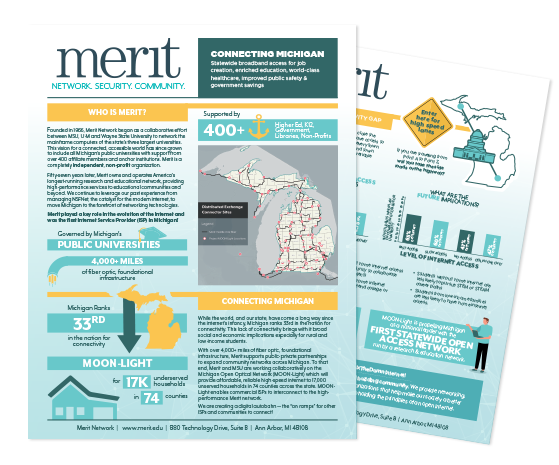
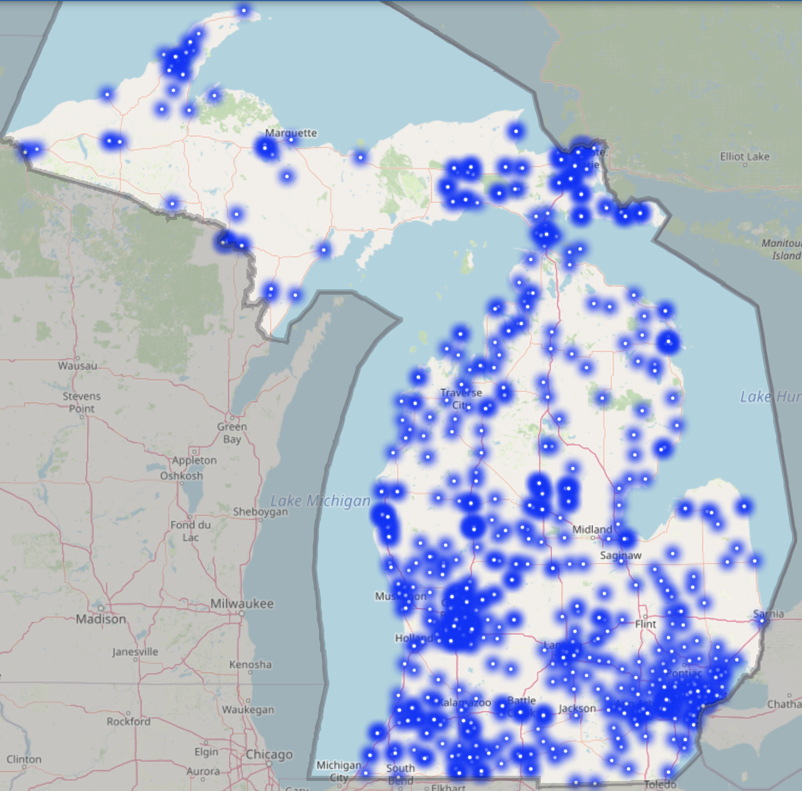
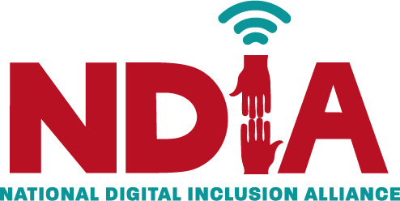

Connectivity for Everyone, Everywhere.
Join us in our mission to promote equal access to the Internet for all communities around the world.
Discover the ImpactInternet Access Statistics
What People Are Saying
Note: names and images have been changed to protect anonymity using thispersondoesnotexist.com
What's Being Done
Merit: Project Moon-Light
With over 4,000+ miles of fiber optic, foundational infrastructure, Merit supports public-private partnerships to expand community networks across Michigan. To that end, Merit and MSU are working collaboratively on the Michigan Open Optical Network (MOON-Light) which will provide affordable, reliable high-speed internet to 17,000 unserved households in 74 counties across the state. MOONLight enables commercial ISPs to interconnect to the high-performance Merit network.
Learn more about Project Moon-Light.
Michigan Wi-Fi Hotspots Map
The State of Michigan has released a statewide Wi-Fi hotspot map to assist residents who currently lack internet access at home. The Wi-Fi mapping effort was spearheaded by the Michigan Public Service Commission (MPSC) and Connected Nation Michigan, along with the Department of Technology, Management and Budget (DTMB) and the Michigan Department of Education.
Read about the mapping effort here, or check out the map.
Internet Society

The Internet Society is a global nonprofit organization that works to ensure the open development, evolution, and use of the Internet for the benefit of all people throughout the world. The Internet Society focuses on promoting universal access to the Internet, open standards, and policy advocacy to ensure the Internet remains a global public resource, open and accessible to all.
Learn more about the Internet Society.
Recent Legislature
Congress is working on a number of initiatives to expand broadband access across the United States. The Infrastructure Investment and Jobs Act, which was signed into law in November 2021, includes $65 billion to expand broadband access to underserved communities. The legislation also includes funding for digital inclusion programs to help bridge the digital divide.
Learn more about the Infrastructure Investment and Jobs Act.
Community Networks
Community networks are locally owned and operated networks that provide broadband access to residents and businesses in a specific geographic area. These networks are often established by local governments, nonprofit organizations, or cooperatives and are designed to meet the unique needs of the communities they serve. Community networks play a critical role in expanding broadband access to underserved areas and promoting digital equity.
Learn more about community networks.
Digital Inclusion Programs
Digital inclusion programs are initiatives that aim to ensure that all individuals have access to the digital tools and resources they need to participate fully in the digital world. These programs often focus on providing affordable internet access, digital skills training, and access to devices to underserved communities. Digital inclusion programs play a critical role in bridging the digital divide and promoting digital equity.
Learn more about digital inclusion programs.
How You Can Help
Donate to Social Initiatives
Support organizations working towards universal internet access by making a donation.
Donate to Internet Society Donate to NDIAContact Your Congressional Leaders
Find and contact your local congressional leaders to advocate for universal internet access.
Lookup LeadersDonate Internet and Hotspots
Programs providing free mobile broadband hotspots and internet service to eligible schools, teachers, students, nonprofits, and libraries.
Donate to Digital Wish Donate to Tech SoupAbout Internet 4 All
Who are we?
We are a group of University of Michigan students tasked with helping create a human rights initiative as part of our project for ALA 256.
Why internet access?
We believe that internet access is a human right and that everyone should have access to the internet, regardless of their location, income, or background. The internet has the power to transform lives, connect people, and provide access to information and opportunities that were previously out of reach. Several of the members of our group have experienced internet issues firsthand throughout their lives, and know the struggles - and just how little people talk about and acknowledge how much of a problem it is.
How can I get in touch?
If you have any questions, comments, or feedback, please feel free to reach out to us at internet-4-all@umich.edu.